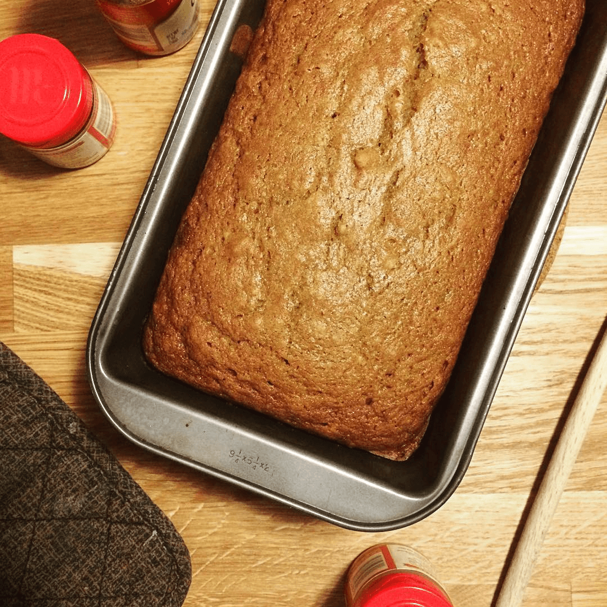

Related Recipes



Pumpkin Bread
45 Minutes
alarmalarm45 Minutes
Makes about 30 pastries
Preheat the oven to 425F. Cover a baking sheet with foil. Toss the squash with 1 tablespoon of the olive oil and apread on the baking sheet in an even layer. Place in the oven and roast for 30 to 40 minutes, stirring every 10 minutes, until tender and caramelized. Remove from the heat.
Bring the stock to a simmer in a saucepan.
Heat the remaining oil over medium heat in a large, heavy nonstick frying pan or a wide saucepan and add the onion. Cook, stirring, until the onion begins to soften, about 3 minutes, and add one third of the squash, the garlic, and about 1/2 teaspoon salt. Cook, stirring, until the onion is tender and the garlic fragrant, about 1 minute, and add the rice. Cook, stirring, until the grains of rice are separate.
Stir in the wine and cook over medium heat, stirring constantly. The wine should bubble, but not too quickly. When the wine has just about evaporated, stir in a ladleful or two of the simmering stock, enough to just cover the rice and squash. The stock should bubble slowly. Cook, stirring often, until it is just about absorbed. Add the sage and another ladleful of the stock, and continue to cook in this fashion, not too fast and not too slowly, adding more stock when the rice is almost dry, for 20 to 25 minutes, or until the rice is cooked al dente. Taste and adjust seasonings.
Add the remaining roasted squash and another 1/2 cup of stock to the rice. Stir in the Parmesan and parsley, and immediately remove from the heat. Add freshly ground pepper, taste one last time and adjust salt. The rice should be creamy. Serve at once.
45 Minutes
alarm